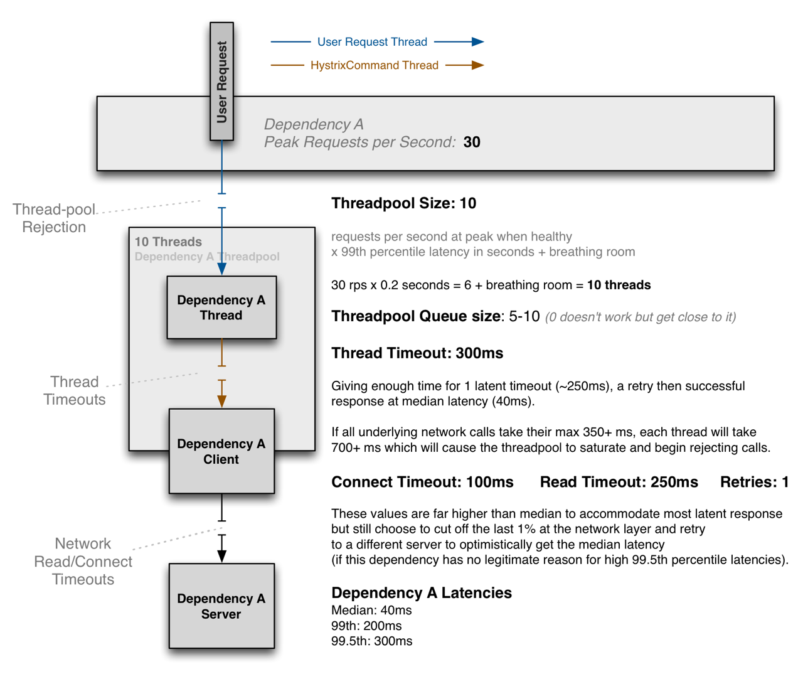

<!DOCTYPE html>
<html>
<head><meta name="generator" content="Hexo 3.8.0">
  <meta charset="utf-8">
  

  
  <title>Hystrix简介 | Imoko</title>
  <meta name="viewport" content="width=device-width, initial-scale=1, maximum-scale=1">
  <meta name="description" content="Hystrix##  Command模式解决什么问题What solution does the Command design pattern describe?  Define separate (command) objects that encapsulate a request. A class delegates a request to a command object instead">
<meta property="og:type" content="article">
<meta property="og:title" content="Hystrix简介">
<meta property="og:url" content="http://yoursite.com/2018/11/22/hystrix/index.html">
<meta property="og:site_name" content="Imoko">
<meta property="og:description" content="Hystrix##  Command模式解决什么问题What solution does the Command design pattern describe?  Define separate (command) objects that encapsulate a request. A class delegates a request to a command object instead">
<meta property="og:locale" content="default">
<meta property="og:image" content="http://yoursite.com/2018/11/22/hystrix/hystrix-command-flow-chart.png">
<meta property="og:image" content="http://yoursite.com/2018/11/22/hystrix/thread-configuration-1280.png">
<meta property="og:updated_time" content="2018-11-22T06:24:29.000Z">
<meta name="twitter:card" content="summary">
<meta name="twitter:title" content="Hystrix简介">
<meta name="twitter:description" content="Hystrix##  Command模式解决什么问题What solution does the Command design pattern describe?  Define separate (command) objects that encapsulate a request. A class delegates a request to a command object instead">
<meta name="twitter:image" content="http://yoursite.com/2018/11/22/hystrix/hystrix-command-flow-chart.png">
  
    <link rel="alternate" href="/atom.xml" title="Imoko" type="application/atom+xml">
  
  
    <link rel="icon" href="/favicon.png">
  
  
    <link href="//fonts.googleapis.com/css?family=Source+Code+Pro" rel="stylesheet" type="text/css">
  
  <link rel="stylesheet" href="/css/style.css">
</head>
</html>
<body>
  <div id="container">
    <div id="wrap">
      <header id="header">
  <div id="banner"></div>
  <div id="header-outer" class="outer">
    <div id="header-title" class="inner">
      <h1 id="logo-wrap">
        <a href="/" id="logo">Imoko</a>
      </h1>
      
    </div>
    <div id="header-inner" class="inner">
      <nav id="main-nav">
        <a id="main-nav-toggle" class="nav-icon"></a>
        
          <a class="main-nav-link" href="/">Home</a>
        
          <a class="main-nav-link" href="/archives">Archives</a>
        
      </nav>
      <nav id="sub-nav">
        
          <a id="nav-rss-link" class="nav-icon" href="/atom.xml" title="RSS Feed"></a>
        
        <a id="nav-search-btn" class="nav-icon" title="Search"></a>
      </nav>
      <div id="search-form-wrap">
        <form action="//google.com/search" method="get" accept-charset="UTF-8" class="search-form"><input type="search" name="q" class="search-form-input" placeholder="Search"><button type="submit" class="search-form-submit">&#xF002;</button><input type="hidden" name="sitesearch" value="http://yoursite.com"></form>
      </div>
    </div>
  </div>
</header>
      <div class="outer">
        <section id="main"><article id="post-hystrix" class="article article-type-post" itemscope="" itemprop="blogPost">
  <div class="article-meta">
    <a href="/2018/11/22/hystrix/" class="article-date">
  <time datetime="2018-11-22T06:24:29.000Z" itemprop="datePublished">2018-11-22</time>
</a>
    
  </div>
  <div class="article-inner">
    
    
      <header class="article-header">
        
  
    <h1 class="article-title" itemprop="name">
      Hystrix简介
    </h1>
  

      </header>
    
    <div class="article-entry" itemprop="articleBody">
      
        <h1 id="Hystrix"><a href="#Hystrix" class="headerlink" title="Hystrix"></a>Hystrix</h1><p>## </p>
<h2 id="Command模式解决什么问题"><a href="#Command模式解决什么问题" class="headerlink" title="Command模式解决什么问题"></a>Command模式解决什么问题</h2><p>What solution does the Command design pattern describe?</p>
<ul>
<li>Define separate (command) objects that encapsulate a request.</li>
<li>A class delegates a request to a command object instead of implementing a particular request directly.</li>
</ul>
<p>What problems can the Command design pattern solve?  </p>
<ul>
<li>Coupling the invoker of a request to a particular request should be avoided. That is, hard-wired requests should be avoided.</li>
<li>It should be possible to configure an object (that invokes a request) with a request.</li>
</ul>
<p>Implementing (hard-wiring) a request directly into a class is inflexible because it couples the class to a particular request at compile-time, which makes it impossible to specify a request at run-time.</p>
<p>总结：Hystrix的command模式带来的好处是在运行时，可以动态切换对某个client的方法的实现。（fallback）</p>
<h2 id="Hystrix的设计原则"><a href="#Hystrix的设计原则" class="headerlink" title="Hystrix的设计原则"></a>Hystrix的设计原则</h2><ul>
<li>防止任何单个依赖项用尽所有容器（例如Tomcat）用户线程。</li>
<li>甩负荷（Shedding load）并快速失败而不是排队。</li>
<li>在可行的地方提供fallback以保护用户免于失败。</li>
<li>使用隔离技术来限制任何一个依赖项的影响。</li>
<li>通过近实时指标，监控和警报优化问题发现时间。</li>
</ul>
<h2 id="执行流程"><a href="#执行流程" class="headerlink" title="执行流程"></a>执行流程</h2><p></p>
<p>有4种方式可以执行一个command：</p>
<ul>
<li><p>同步执行</p>
<p>execute()— 阻塞式调用，返回一个单个的response。当调用execute()实际上会调用queue().get()</p>
</li>
<li><p>异步执行</p>
<p>queue() — 返回一个Future，用这个Future可以获取一个单个的response。实际会调用toObservable().toBlocking().toFuture()</p>
</li>
<li><p>响应式执行（hot）</p>
<p>observe()— 返回一个Observable，并且立刻订阅。 实际会调用 toObservable().subscribe(subject)</p>
</li>
<li><p>响应式执行 （cold）</p>
<p>toObservable()— 返回一个Observable，当被订阅的时候，才开始执行指令。</p>
</li>
</ul>
<figure class="highlight java"><table><tr><td class="gutter"><pre><span class="line">1</span><br><span class="line">2</span><br><span class="line">3</span><br><span class="line">4</span><br></pre></td><td class="code"><pre><span class="line">K             value   = command.execute();</span><br><span class="line">Future&lt;K&gt;     fValue  = command.queue();</span><br><span class="line">Observable&lt;K&gt; ohValue = command.observe();         <span class="comment">//hot observable</span></span><br><span class="line">Observable&lt;K&gt; ocValue = command.toObservable();    <span class="comment">//cold observable</span></span><br></pre></td></tr></table></figure>
<h3 id="注解方式"><a href="#注解方式" class="headerlink" title="注解方式"></a>注解方式</h3><ul>
<li>同步执行</li>
</ul>
<figure class="highlight java"><table><tr><td class="gutter"><pre><span class="line">1</span><br><span class="line">2</span><br><span class="line">3</span><br></pre></td><td class="code"><pre><span class="line"><span class="meta">@HystrixCommand</span> <span class="comment">//execute()</span></span><br><span class="line"><span class="function"><span class="keyword">public</span> User <span class="title">getUserById</span><span class="params">(String id)</span> </span>&#123;</span><br><span class="line">&#125;</span><br></pre></td></tr></table></figure>
<ul>
<li>异步执行</li>
</ul>
<figure class="highlight java"><table><tr><td class="gutter"><pre><span class="line">1</span><br><span class="line">2</span><br><span class="line">3</span><br></pre></td><td class="code"><pre><span class="line"><span class="meta">@HystrixCommand</span> <span class="comment">//queue()</span></span><br><span class="line"><span class="function"><span class="keyword">public</span> Future&lt;User&gt; <span class="title">getUserByIdAsync</span><span class="params">(<span class="keyword">final</span> String id)</span> </span>&#123;</span><br><span class="line">&#125;</span><br></pre></td></tr></table></figure>
<ul>
<li>响应式执行</li>
</ul>
<figure class="highlight java"><table><tr><td class="gutter"><pre><span class="line">1</span><br><span class="line">2</span><br><span class="line">3</span><br><span class="line">4</span><br><span class="line">5</span><br><span class="line">6</span><br><span class="line">7</span><br><span class="line">8</span><br><span class="line">9</span><br><span class="line">10</span><br><span class="line">11</span><br><span class="line">12</span><br><span class="line">13</span><br><span class="line">14</span><br><span class="line">15</span><br><span class="line">16</span><br><span class="line">17</span><br><span class="line">18</span><br></pre></td><td class="code"><pre><span class="line"><span class="meta">@HystrixCommand</span>（observableExecutionMode = EAGER）<span class="comment">//observable()</span></span><br><span class="line"><span class="comment">//or</span></span><br><span class="line"><span class="meta">@HystrixCommand</span>（observableExecutionMode = LAZY）<span class="comment">//toObservable()</span></span><br><span class="line"><span class="function"><span class="keyword">public</span> Observable&lt;User&gt; <span class="title">getUserById</span><span class="params">(<span class="keyword">final</span> String id)</span> </span>&#123;</span><br><span class="line">     <span class="keyword">return</span> Observable.create(<span class="keyword">new</span> Observable.OnSubscribe&lt;User&gt;() &#123;</span><br><span class="line">                <span class="meta">@Override</span></span><br><span class="line">                <span class="function"><span class="keyword">public</span> <span class="keyword">void</span> <span class="title">call</span><span class="params">(Subscriber&lt;? <span class="keyword">super</span> User&gt; observer)</span> </span>&#123;</span><br><span class="line">                    <span class="keyword">try</span> &#123;</span><br><span class="line">                        <span class="keyword">if</span> (!observer.isUnsubscribed()) &#123;</span><br><span class="line">                            observer.onNext(<span class="keyword">new</span> User(id, name + id));</span><br><span class="line">                            observer.onCompleted();</span><br><span class="line">                        &#125;</span><br><span class="line">                    &#125; <span class="keyword">catch</span> (Exception e) &#123;</span><br><span class="line">                        observer.onError(e);</span><br><span class="line">                    &#125;</span><br><span class="line">                &#125;</span><br><span class="line">      &#125;);</span><br><span class="line">&#125;</span><br></pre></td></tr></table></figure>
<h2 id="隔离"><a href="#隔离" class="headerlink" title="隔离"></a>隔离</h2><h3 id="Thread-pool"><a href="#Thread-pool" class="headerlink" title="Thread pool"></a>Thread pool</h3><p>好处：安全，能够将client看作黑盒。</p>
<p>坏处：耗时增加，每一个command的执行都要经历queueing, scheduling和线程切换。</p>
<h3 id="Semaphores"><a href="#Semaphores" class="headerlink" title="Semaphores"></a>Semaphores</h3><p>好处：没有额外的消耗</p>
<p>坏处：因为无法主动中断，必须完全相信client能够快速失败。</p>
<h2 id="Sequence-Diagram"><a href="#Sequence-Diagram" class="headerlink" title="Sequence Diagram"></a>Sequence Diagram</h2><p>@adrianb11 has kindly provided a <a href="https://design.codelytics.io/hystrix/how-it-works" target="_blank" rel="noopener">sequence diagram</a> demonstrating the above flows</p>
<h2 id="Hystrix-参数调整"><a href="#Hystrix-参数调整" class="headerlink" title="Hystrix 参数调整"></a>Hystrix 参数调整</h2><p></p>
<h3 id="Timeout"><a href="#Timeout" class="headerlink" title="Timeout"></a>Timeout</h3><ul>
<li><p>用接近99.5线的值来设置Thread Timeout。</p>
</li>
<li><p>如果容许重试的话，Thread Timeout和NetworkTimeout要配合起来，留够一次retry的时间：</p>
<pre><code>ThreadTimeout &gt;（NetworkTimeOut + retry的预估用时）
</code></pre></li>
<li><p>NetworkTimeout的一般被设置为在网络层可以拦截最耗时的1%的请求。</p>
</li>
</ul>
<h3 id="ThreadPool"><a href="#ThreadPool" class="headerlink" title="ThreadPool"></a>ThreadPool</h3><ul>
<li>线程池大小 = 每秒请求数*99线的响应时间（以秒为单位）</li>
</ul>
<p>queued + poolSize = 并发数</p>
<p>队列过长，会导致响应时间增加。</p>
<p>Hystrxi的treahdpool的配置和java的线程池一样。</p>
<p>Metrix</p>
<p>Metric</p>
<h2 id="Metric"><a href="#Metric" class="headerlink" title="Metric"></a>Metric</h2><p>参考：</p>
<p><a href="https://blog.csdn.net/xiaojia1100/article/details/65631778" target="_blank" rel="noopener">https://blog.csdn.net/xiaojia1100/article/details/65631778</a></p>
<p><a href="https://en.wikipedia.org/wiki/Command_pattern" target="_blank" rel="noopener">https://en.wikipedia.org/wiki/Command_pattern</a></p>
<p><a href="https://github.com/Netflix/Hystrix/wiki" target="_blank" rel="noopener">https://github.com/Netflix/Hystrix/wiki</a></p>
<p><a href="https://docs.oracle.com/javase/8/docs/api/java/util/concurrent/ThreadPoolExecutor.html" target="_blank" rel="noopener">https://docs.oracle.com/javase/8/docs/api/java/util/concurrent/ThreadPoolExecutor.html</a></p>

      
    </div>
    <footer class="article-footer">
      <a data-url="http://yoursite.com/2018/11/22/hystrix/" data-id="cjosax00d000hrzwkrup4p519" class="article-share-link">Share</a>
      
      
    </footer>
  </div>
  
    
<nav id="article-nav">
  
    <a href="/2018/11/22/DBs_mysql_locks/" id="article-nav-newer" class="article-nav-link-wrap">
      <strong class="article-nav-caption">Newer</strong>
      <div class="article-nav-title">
        
          Mysql Locks
        
      </div>
    </a>
  
  
    <a href="/2018/11/22/consul-simple/" id="article-nav-older" class="article-nav-link-wrap">
      <strong class="article-nav-caption">Older</strong>
      <div class="article-nav-title">Consul简介</div>
    </a>
  
</nav>

  
</article>

</section>
        
          <aside id="sidebar">
  
    

  
    

  
    
  
    
  <div class="widget-wrap">
    <h3 class="widget-title">Archives</h3>
    <div class="widget">
      <ul class="archive-list"><li class="archive-list-item"><a class="archive-list-link" href="/archives/2018/11/">November 2018</a></li><li class="archive-list-item"><a class="archive-list-link" href="/archives/2018/10/">October 2018</a></li><li class="archive-list-item"><a class="archive-list-link" href="/archives/2018/08/">August 2018</a></li><li class="archive-list-item"><a class="archive-list-link" href="/archives/2018/07/">July 2018</a></li><li class="archive-list-item"><a class="archive-list-link" href="/archives/2018/05/">May 2018</a></li><li class="archive-list-item"><a class="archive-list-link" href="/archives/2018/04/">April 2018</a></li></ul>
    </div>
  </div>


  
    
  <div class="widget-wrap">
    <h3 class="widget-title">Recent Posts</h3>
    <div class="widget">
      <ul>
        
          <li>
            <a href="/2018/11/22/Java_synchronizer/">JVM Synchronizer</a>
          </li>
        
          <li>
            <a href="/2018/11/22/DBs_mysql_locks/">Mysql Locks</a>
          </li>
        
          <li>
            <a href="/2018/11/22/hystrix/">Hystrix简介</a>
          </li>
        
          <li>
            <a href="/2018/11/22/consul-simple/">Consul简介</a>
          </li>
        
          <li>
            <a href="/2018/11/22/BTreeStruct/">B-tree数据结构</a>
          </li>
        
      </ul>
    </div>
  </div>

  
</aside>
        
      </div>
      <footer id="footer">
  
  <div class="outer">
    <div id="footer-info" class="inner">
      &copy; 2018 Tao<br>
      Powered by <a href="http://hexo.io/" target="_blank">Hexo</a>
    </div>
  </div>
</footer>
    </div>
    <nav id="mobile-nav">
  
    <a href="/" class="mobile-nav-link">Home</a>
  
    <a href="/archives" class="mobile-nav-link">Archives</a>
  
</nav>
    

<script src="//ajax.googleapis.com/ajax/libs/jquery/2.0.3/jquery.min.js"></script>


  <link rel="stylesheet" href="/fancybox/jquery.fancybox.css">
  <script src="/fancybox/jquery.fancybox.pack.js"></script>


<script src="/js/script.js"></script>


  </div>
</body>
</html>